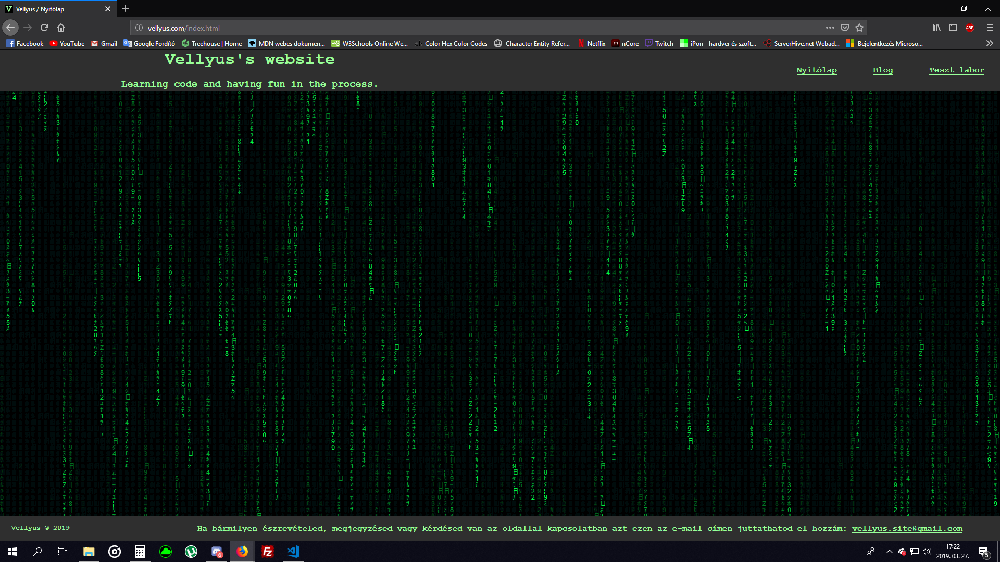
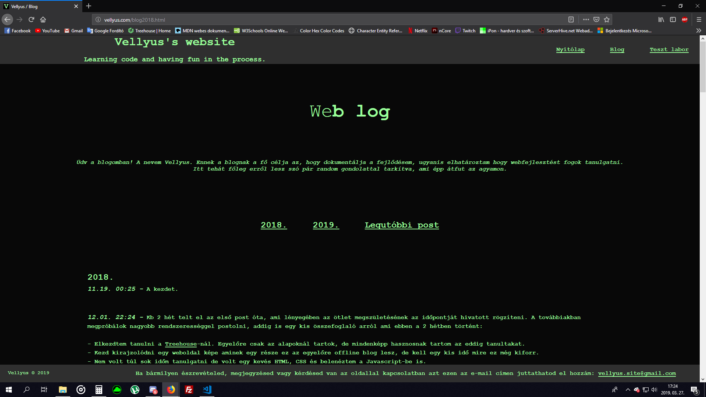
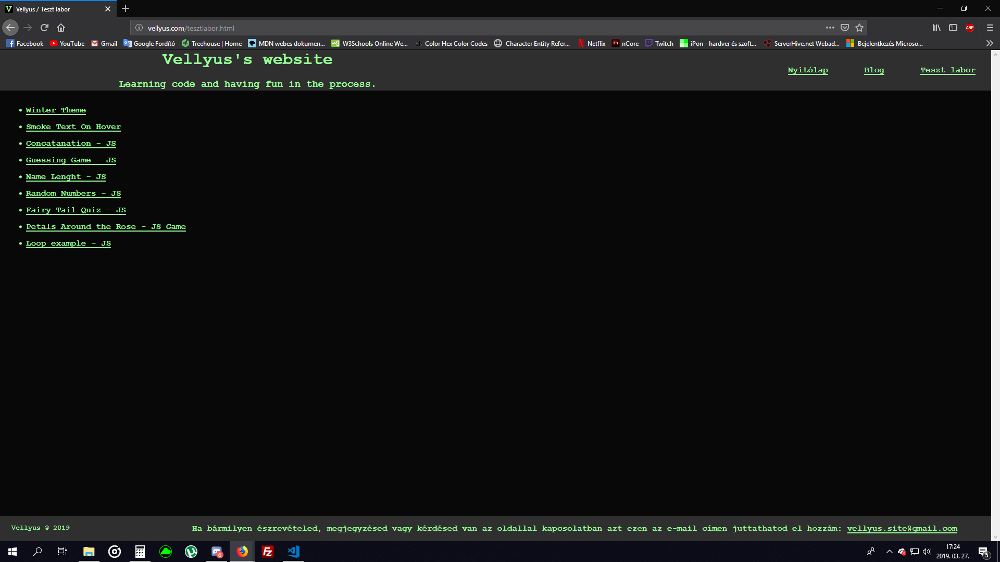

2019.
01.11. 08:25
Elég régen volt blog post, aminek sok oka van: pihizni akartam év
végén, lusta voltam / nem volt kedvem kódolással foglalkozni,
vagy foglalkoztam vele csak nem akartam blogolni. Most, hogy végre megint van blog post, pár szó az oldalon
történt változásokról:
- Végre elkészült a főoldal menüvel, Matrix-os háttérrel meg minden. Még nem az igazi, de kezdetnek megteszi.
Egyelőre egyik lap sincs normálisan beállítva kisebb kijelzőkhöz,
szóval telefonon katasztrófa az egész, de úgy tervezem, hogy ezt hétvégén elintézem.
- A blog minden évben egy új lapot kap, ide is lett egy kis menü és egy kényelmes kis link, ami rögtön a legújabb
posthoz repíti az ide látogatókat.
(Elképesztő, hogy egy átmelózott éjszaka után még képes vagyok így fogalmazni ^^ )
- A "Titokzatos új projekt" egyelőre stagnál. Önhibámon kívül... a barimra várok akié az oldal lesz. Ahogy ismerem
ebből nem mostanában lesz valami szóval létrehoztam még egy linket ami a
"Teszt labor" nevet kapta. Kódolást csak úgy tud tanulni az ember, ha gyakorolja is, ezért arra gondoltam, hogy
amit egy oktatóvideón megtanulok azt azonnal ki is próbálom és ezeket a spontán
próbálkozásokat ide feltöltöm. A link egyelőre nem mutat sehova, de hamarosan meglesz ez is.
01.16. 08:23
Tegnap végre tudtam haladni az oldallal. Rájöttem, hogy ha korán felkelek még meló előtt, akkor sokkal több kedvem van az egészhez, mint munka után fáradtan. :) A blog post megírásához sajna már nem volt kedvem, szóval ezt ma pótolom. Szóval... tegnap az jutott eszembe, hogy ha a főoldalról a fix headert és a footert átrakom a többi lapra is akkor sokkal átláthatóbb lesz a menü, úgyhogy ezt megvalósítottam. Végre él a Teszt labor menüpont is, egyelőre a téli témát raktam rá, ami korábban az oldal háttere volt, plusz felkerült egy "Smoke Text On Hover" lap is. Ez nem saját alkotás, csak másoltam egy tutorial-ból, de majd ha lesz kedvem hozzá csinálok vele valami egyedibbet. Arra gondoltam, hogy megfordítom az animációt és egy valamivel nagyobb szöveget hover-rel fel lehetne fedni, mintha zseblámpa lenne az egér vagy ilyesmi.
02.01. 17:48
Megpróbáltam megvalósítani a Smoke Text-es ötletemet, de jelenleg
ez meghaladja a tudásom, szóval későbbre halasztom. Van még egy-két
hasonló ötletem amiket egyelőre nem tudok kivitelezni. Plusz legutóbb amikor minden oldalra megcsináltam a fix
headert és footert eléggé szétcsúszott az oldal telefonon, ezt nagyjából
sikerült rendbehozni. Nem tökéletes, de nekem egyelőre így is megfelel.
Ez még valamikor a hét elején volt, csak nem volt kedvem blogolni róla. Mostanában eléggé elhanyagoltam a
kódolást, ezért arra
gondoltam, hogy vinni kéne bele valami rendszerességet. Egyelőre arra jutottam, hogy hétköznap 1-1, hétvégén pedig
3 óra ráfordítással még marad mellette is elég szabadidőm. Eredetileg
több időt szerettem volna kitűzni kódolásra, de tudom, hogy nagyon lusta vagyok és egyelőre úgyse menne a napi 2
óra. Ezen kívül vissza kéne térni a napi egy blog posthoz, gyakran ehhez
sincs kedvem, pedig jó dolog.
Novemberben kezdtem el ezt az egészet, de mivel januárban elég keveset voltam aktív mondhatni 2 hónapom van benne
ténylegesen. Jó lenne 2019 végén úgy tekinthetnék vissza erre az oldalra,
hogy lássam hogy sokat fejlődtem, ehhez viszont nem szabadna ennyi ideig elhanyagolni, mint ahogy most tettem.
Szóval valami ilyesmi lenne a cél az idei év végéig.
Hogy haladok a tanulással? Nos, a HTML-el és a CSS-el szerintem így is túl sok időt vesztegettem. Ezekből már
eleget tudok ahhoz hogy most ne érdekeljenek egy ideig. Igaz, hogy még
ezekről is lenne mit tanulnom, de most már ideje lenne belevágni a Javascript-be. A héten elkezdtem újra
átnézegetni mindazt amit eddig tanultam róla
Treehouse-on, mert annyi ideig nem
foglalkoztam vele, hogy kb minden kiesett. Szóval mostantól Javascript van fókuszban és elméletileg a Teszt
Laborba fel is kerülnek majd azok a "mini-projektek" amiket csinálok vele.
02.05. 07:32
Felkerült pár újdonság a Teszt laborba, ezek mind olyasmik amiket Treehouse-on gyakorolgatok. Csak apróságok Javascript-tel: string-ek összevonása, random számok generálása, lenght property, conditional statement alapok. Egyelőre van angol és magyar nyelvű is, majd később valahogy talán rendszerezem őket. Még nem döntöttem el... pl a weboldal címe is angol maradt, mert szerintem nagyon hülyén hangzott magyarul. Jó lenne valahogy közös nevezőre jutni, de a blogot nem akarom angolul írni, a többit meg nem akarom teljes mértékben magyarra fordítani.
02.07. 03:33
Tegnap (még éjfél előttől számolva :D ) felkerült a Teszt laborba
egy Fairy Tail Quiz, amit egy
Treehouse-os code challenge
keretében készítettem. Eleinte kételkedtem, hogy egyáltalán össze tudom-e rakni. Elég nagy falatnak tűnt, de
belevágtam és szép sorban sikerült megcsinálni minden elemét.
Nagyon élveztem és bár tudom, hogy nem sokan olvassák a blogot, közülük még kevesebben nézik az animét amiről a
kvíz szól azért kiraktam. Aki nem nézi az animét az fordulhat a
Google-höz.
Elkezdek készíteni egy játékot az oldalra, valószínűleg ezt is csak a Teszt Laborba rakom fel egyelőre. Egy
rejtvény jellegű dolog lesz, de sokat nem akarok elárulni róla.
Nem vagyok benne biztos, hogy a jelenlegi tudásom elegendő lesz-e ehhez a projekthez, de belekezdek és meglátom
mire jutok vele.
Még valami, amiről nincs kedvem folyton blogolni: rendszeresen végzek apró módosításokat az oldalon. Főleg azért
mert nem veszek észre mindent és ismerősök jelzik, ha valami nem működik
úgy, ahogy kellene. Ilyen apróságokkal nem szeretném telespamelni a blogot, ha lehet ezt így mondani.
Pro tipp - Ha csinálsz valamit, mindig nézesd át mással is, lehet, hogy észrevesznek olyasmit ami felett te
elsiklasz!
02.10. 16:00
Ismét az előző napról blogolok, mert tegnap nem volt kedvem hozzá... Szóval elkészült a rejtvény jellegű játék, amit említettem az előző postban. A neve Petals Around the Rose, ez is megtalálható a Teszt laborban. Magát a játékot nem volt olyan nehéz kódolni, mint ahogy elképzeltem, de akadtak más problémák, amiket nem sikerült megoldanom. Így se lett rossz, de később majd még javítok rajta.
02.15. 17:21
Tegnapelőtt megbetegedtem, de ma már azért tudtam foglalkozni
valamennyit az oldallal. Megcsináltam pár apróságot,
amit már terveztem egy ideje:
- A header és footer stílus elemeit külön stíluslapra vittem át. Egyszer már megszívtam vele amikor változtattam
rajta.
Minden oldalon külön kellett átírni a kódot és az egyiket kis is felejtettem, amit csak pár nap múlva vettem
észre.
- A stíluslapokat és képeket külön mappába tettem és átírtam az összes linket, ami ezekre hivatkozott. Remélem
nem
hagytam ki egyet sem.
A képeknek eddig is külön mappa volt, csak pár kivétel akadt.
- Felkerült a teszt laborba még egy apró kreálmány amit a loop tanulásának kapcsán készítettem. Ez is angol,
szerintem marad is így, hacsak egyszer nem lesz kedvem mindet
egyszerre magyarra fordítani.
- A "Titokzatos új project" menüpontot levettem, mert szerintem ebből már nem lesz semmi. :/
03.01. 06:30
A Petals around the rose játék reszponzívabb lett: már nem lóg ki a
szélén a lista számozása, jobb a betűméret, margók stb...
Ismét az történt, hogy a telefon egy korábbi verziót töltött be (Chrome böngésző), és nem tudtam tesztelni, hogy
ott is működnek-e a változtatások. Ezt inkognitó módba kapcsolással
sikerült orvosolni.
Próbáltam váltani Atom-ról Visual Studio Code-ra, mert elterjedtebb. Nos ez egyelőre nem fog megtörténni, mert a
shortcut commandok nem azt csinálják ami a menüben szerepel,
de majd még kitapasztalom hogy van ez. Amúgy nem tűnik rossznak, vannak benne hasznos dolgok amik az Atom-ból
hiányoznak.
03.27. 18:30
Oké, szóval kb egy hónap kihagyás volt, mert nem volt kedvem,
fáradt voltam, stb... a szokásos. A legutóbbi post óta
mindössze annyi haladás történt, hogy váltottam Visual Studio Code-ra. Sikerült beállítani pár gyorsbillentyűt
amikre szükségem van és így már egész használható. Kicsit még
új, meg kell szoknom, de jó lesz. A kellemesebb használói élmény érdekében lesz egy design-beli változás. A
matrix
téma valószínűleg ejtve lesz és mobil készülékeket
előnyben részesítve újra lesz építve az oldal. Még nem tiszta, hogy pontosan milyen lesz, de itt van pár
screenshot a mostani állapotról, aztán szép lassan
elkezdem újraformálni az oldalt. (A menü szinte biztosan változni fog és most hogy a matrix-os téma talán el
lesz
hagyva lesz lehetőség könnyebben olvasható szöveget írni.)



03.30. 23:35
Megvan a színkombináció, a layouthoz viszont még nem nyúltam hozzá. Holnap nekilátok annak is. Elég sokféle színt megnézegettem, ha nem is végleges a mostani állapot, azt hiszem ez jó ideig megfelel majd.
04.02. 17:30
Hát sem tegnap, sem tegnapelőtt nem csináltam semmit a layouttal, de ma elkezdtem csinálgatni. Eddig a nyitólap van készen, biztos lesznek még rajta apró változtatások, de ezt már késznek lehet nevezni. A Matrix-os kódesőt levettem, ez átkerül a Teszt laborba. Tudom, hogy jelenleg van egy link a nyitólapon ami önmagára mutat, ehelyett lesz majd egy "About" szekció féleség.
04.20. 20:20
Tegnap elkészült az új design csak nem volt már kedvem blogolni róla. Ma annyit adtam hozzá, hogy a gombok most már egész felületükön működnek. Eddig ugyanis csak a bennük lévő linkre kattintva lehetett továbbjutni. Még várható egy egyszerű kis "Elérhetőségek" oldal ami a nyitólapról lesz elérhető. Egyelőre nem vagyok benne biztos, hogy mit akarok ide kitenni, valószínűleg csak egy e-mail cím lesz.
04.23. 00:41
Ma Treehouse-on haladtam, mert elég régóta nem nyúltam hozzá. Át kell rágnom magam egy csomó CSS anyagon aminek egy része ismétlés lesz mielőtt újdonsághoz érek. Közben azért Youtube-os videókon tanulok új dolgokat is. Arra gondoltam, hogy mivel tényleges weboldalakat nem készítek pár mintát azért felteszek random témával és valami kitöltő szöveggel. Gyakorlásnak jó lesz és nem kell órákat agyalni a tartalmon.
04.24. 17:53
Felkerült egy parallax weboldal minta a Teszt Laborba. Mobilon nem fog működni a parallax effect.
04.29. 10:10
Újabb minta a Teszt laborban, ezúttal egy lap videóval a háttérben. Sajna elég lassan tölti be a böngésző...
05.20. 02:38
Megint volt egy elég nagy szünet. Pár napja megcsináltam az Elérhetőség lapot, tegnap pedig feltettem a Google Analytics-et. Ez lényegében csak követi, hogy hányan nézik a weboldalt. Az elérhetőség lapon csak a régi e-mail címet adtam meg amit még ehhez az oldalhoz hoztam létre. Talán később lesz más is, de egyelőre úgy érzem, hogy ennyi elég.
06.02. 22:30
Hali! :) Megint nem nagyon volt kedvem blogolni, de itt egy kis összefoglaló az elmúlt hétről. Treehouse-on Git-et tanulgatok, ha végeztem ezzel a kurzussal felteszem a gépemre is és próbálom minél többet használni. Majdnem minden nap tanultam vagy dolgoztam valami kis mini-projekten amit nem akartam itt megosztani. Azért volt pár nap pihi meg családos event is. Pár hete gondoltam arra, hogy határidőket kellene kitűznöm egy-egy projekthez, de eddig ezt nem sikerült megvalósítani. Ha végzek az egyikkel vagy elvetek egy ötletet egyszerűen lépek a következőre vagy folytatom a tanulást. Jó lenne ez a határidős dolog, de még nem sikerült rávennem magam...
06.13. 13:25
Egy kis összefoglaló: Hétköznap nem nagyon kódoltam csak javascriptet ismételgettem, mert ezzel kellene haladni a kurzusban, de kicsit régen használtam már. Szóval átnézem az eddigieket mielőtt továbbmegyek. Hétvégén elkezdtem egy appot, amit már régóta terveztem elkészíteni. Nem sikerült befejezni, de valószínűleg a következő hétvégén prezentálható állapotba hozom és felteszem. Aztán majd később még javítok rajta, mert kétlem hogy olyanra sikerül amilyenre épp szeretném.
07.12. 22:08
Szóval... egy újabb nagy szünetet követően megint lett kedvem kódolni. Tegnap feltettem a Git-et,
kipróbálgattam meg minden. Tök jó! :)
Közben néha ismételgettem a Javascriptet, hamarosan beérem magam és kezdhetem tanulni az újdonságokat. Ami azt a
kis appot illeti amit az előző postban említettem: Nos úgy döntöttem, hogy mégsem teszem fel amíg nincs kb kész
állapotban. Sikerült haladni vele, már csak 1-2 apró módosítás és a design hiányzik.